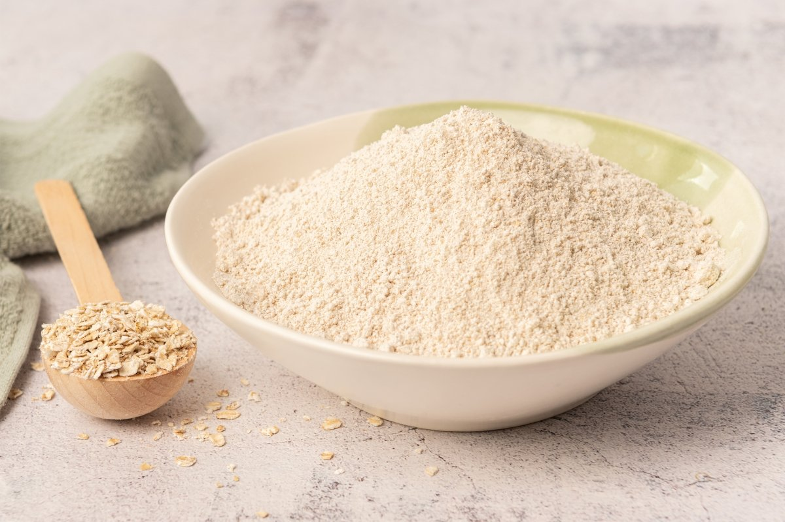
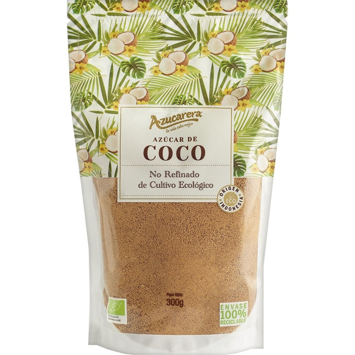
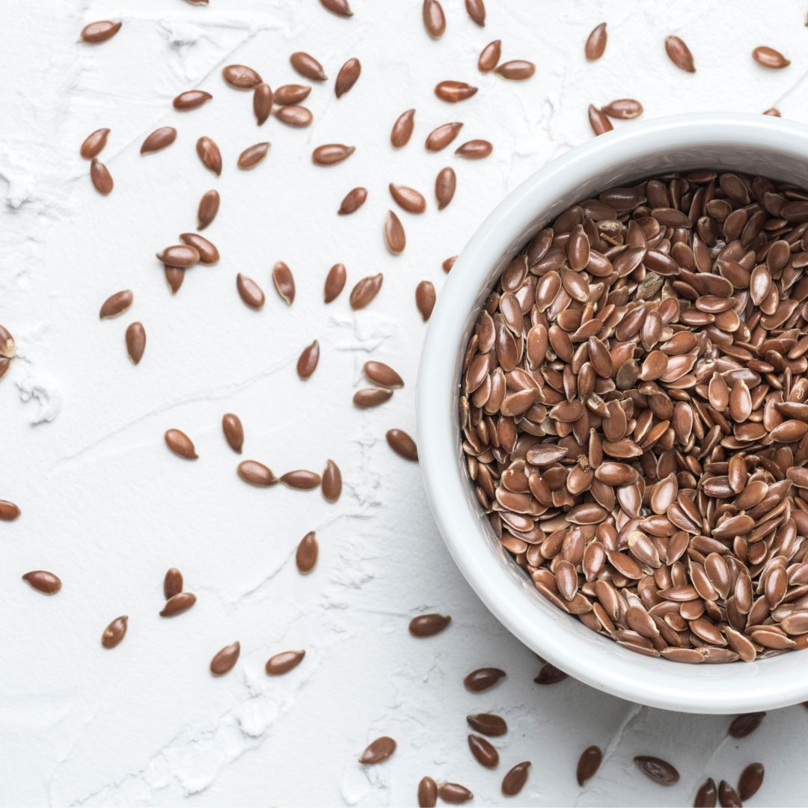
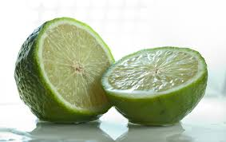
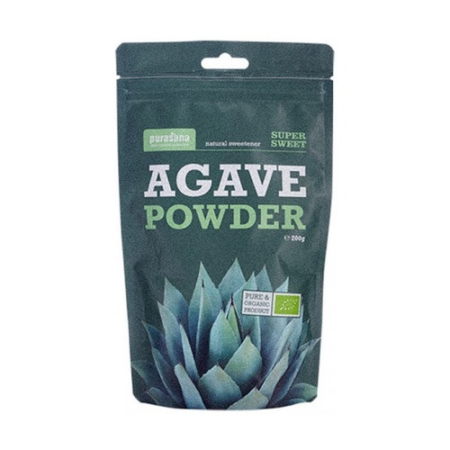
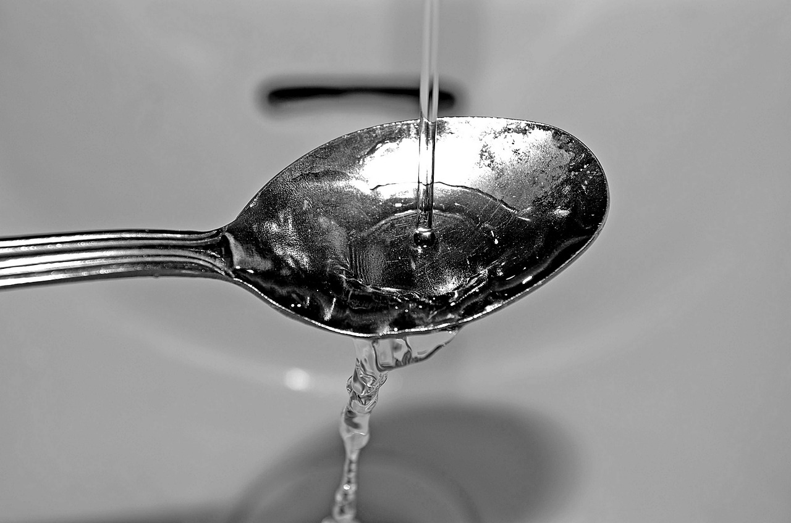
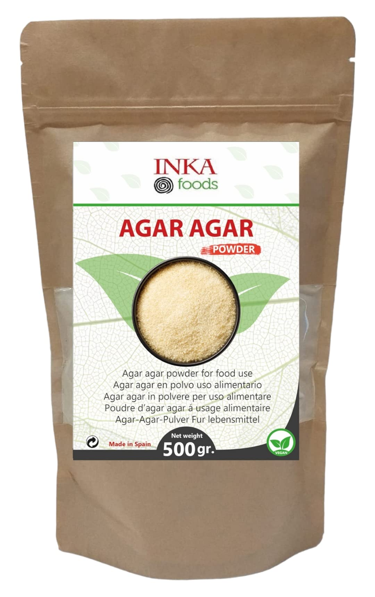

Galletas para San Valentín que son deliciosas y perfectas para compartir.
Preparación: 20 min
Cocción: 15 min
Total: 35 min
Raciones: 6
Ingredientes
3/4 taza de harina de avena (80g)

1/4 taza de azúcar de coco

1/2 cucharada de semillas de lino triturado

40ml de aceite de oliva virgen extra
1/2 lima rallada (solo la piel)

Un poco de ágave en polvo o endulzante en polvo blanco para decorar (opcional)

1 taza de mezcla de arándanos, fresas y alguna frambuesa (para mermelada)
1 cucharada de agua (para mermelada)

3 cucharadas de xilitol, azúcar de coco o panela (para mermelada)
1/2 cucharadita de agar-agar en polvo (para mermelada)

Elaboración paso a paso
Masa: Echaremos todos los ingredientes de la masa de galletas en un bol y amasaremos un poco para que se mezcle todo bien. Dejaremos enfriar un rato en la nevera o unos minutos en el congelador para manipularla mejor y más cómodamente, aunque puede no ser necesario.
Estirar masa: Estiraremos la masa con un rodillo hasta un grosor de 2 cm. Con un cortapastas le daremos forma, utilizando uno más pequeño para quitar el centro de la mitad de ellas. En el horno previamente caliente, hornearemos a 180°C hasta que empiecen a dorarse, aproximadamente unos 12 minutos. Cada horno es diferente, así que debemos estar atentos para que no se quemen.
Enfriar: Las sacaremos del horno y las dejaremos enfriar en una rejilla para que queden crujientes. Cuando estén frías, las espolvorearemos con un poco de ágave en polvo para darle un bonito toque nevadito.
Mermelada: Para hacer la mermelada, echaremos todos los ingredientes en una olla pequeña y la llevaremos a ebullición a fuego medio. Bajaremos el fuego y coceremos unos 5 minutos, removiendo hasta que espese un poco. Apagaremos el fuego y dejaremos enfriar ligeramente, sin dejar que se enfríe por completo, ya que podría endurecerse. Cuando esté templada pero algo firme, rellenaremos las galletas poniendo una cucharadita en el centro de una galleta sin agujero y cubriéndola con una que tenga el hueco para que se vea.
Guardar: La mermelada en contacto con las galletas puede hacer que, si pasan muchas horas hasta su consumo, estas se reblandezcan. Por ello, si las vas a preparar rellenas, es mejor hacerlo poco antes de consumirlas, o no rellenarlas de inmediato, guardarlas en un recipiente hermético cuando estén frías, y preparar el relleno un rato antes de servirlas.